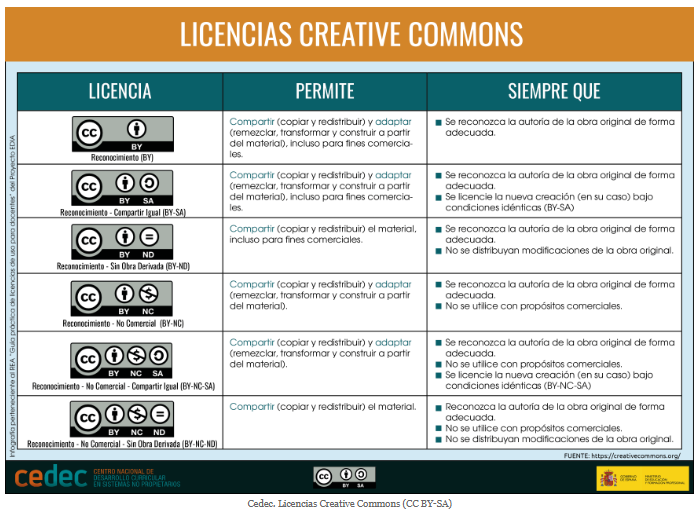
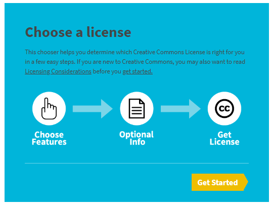
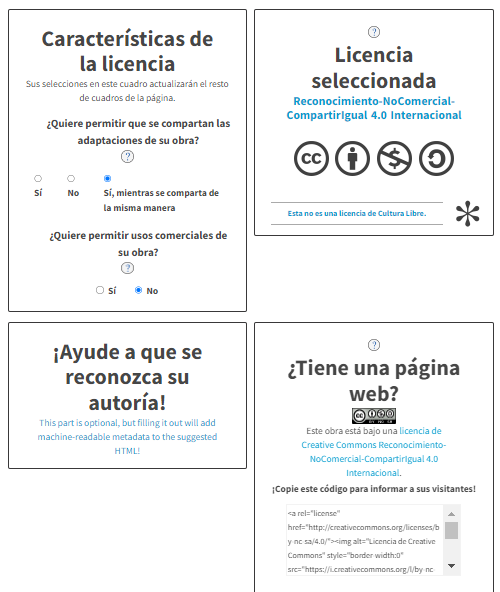
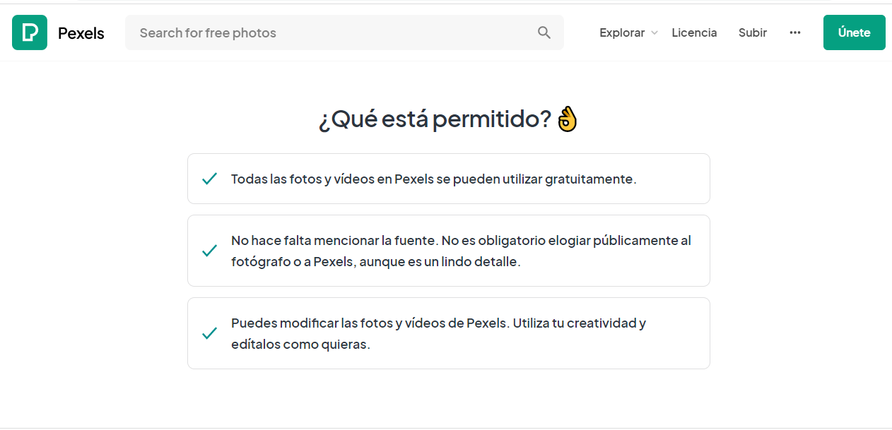

Los contenidos de Internet, los programas, las imágenes, los textos, los vídeos, etc., suelen estar protegidos por los derechos de autor, es decir, solo el autor puede explotarlos (distribuirlos, modificarlos, …) de forma exclusiva durante un plazo de tiempo. Por tanto, NO pueden ser redistribuidos sin permiso expreso.
¿Qué son las licencias?
La licencia de un recurso determinará dónde, cuándo y cómo podremos usar ese recurso. Se trata de una característica a la que no prestamos atención, pero que es importante conocer. Por ejemplo, cada programa tiene su licencia y al instalarlo estamos aceptando un contrato de uso.
Copyright
Es la licencia más restrictiva. Este tipo de licencia da al poseedor todos los derechos de la obra, tanto de su reproducción, como su distribución y/o comercialización. Si otra persona quiere usar su obra, debe llegar a un acuerdo privado con él.
Copyleft
Es la licencia más abierta, tanto que incluso se puede participar en la obra, indicando, claro está, la parte de autoría de cada autor.
Licencia GPL
Generic Public License, está enfocada al mundo informático. Se usa en el mundo del software libre y código abierto, lo que hace es permitir que los usuarios finales (personas, organizaciones, etc) tengan libertad de usar, estudiar, compartir y modificar el software, pero siempre bajo la misma fórmula.
Licencias Creative Commons
Son similares a las GPL, con la diferencia de que están adaptadas a todos los ámbitos y no solo al tecnológico. Se trata de licencias personalizables. Los usuarios pueden utilizar una obra con este tipo de licencia sin necesidad de pedir permiso al autor, pero respetando sus condiciones. El autor puede decidir, por ejemplo, si permite usar el recurso para la distribución comercial o no. Hay diferentes tipos de licencias Creative Commons:

A estas seis licencias hay que añadir la CC0 (Creative Commons Zero), más conocida como licencia de dominio público. Esta licencia permite copiar, modificar, distribuir y reproducir las obras. También permite su uso comercial y no es necesaria la atribución, es decir, no necesitamos indicar su autoría ni pedir permiso al autor.
Creative Commons proporciona una herramienta gratuita y sencilla para crear licencias. Si queremos asignar una licencia a un trabajo de investigación, trabajo fin de carrera, página web, etc. hay que seguir los siguientes pasos:
- Entrar en la web de Creative Commons y en el menú superior, pulsar en "Comparta su trabajo". Luego, hacer clic en "Get Started"

- Seleccionar las características de la licencia respondiendo a las preguntas. En la parte de la derecha se mostrará la licencia seleccionada.

Permisos para utilizar Imágenes
Algunas imágenes pueden exigir una aplicación casi estricta del copyright; otras encuadrarse dentro del copyleft —como las licencias Creative Commons— o pertenecer al dominio público. Hay que tener en cuenta que, aunque una obra sea gratis, no podemos hacer lo que queramos con ella. Puede ser que el autor haya puesto restricciones a la hora de usarla. Por ejemplo, el autor posibilita la gratuidad de la imagen para promocionar su trabajo, pero exige que no se haga un uso comercial de ella.
Tampoco, el hecho de que un recurso esté libre de derechos significa que sea gratis. Así, encontramos bancos de imágenes donde se cobra por adquirir fotografías o imágenes libres, o requiere suscripción. Por ejemplo, Adobe Stock o Dreamstime.
¿Dónde ver qué derechos tiene y qué usos permite una imagen? En la propia plataforma donde encuentras la imagen para descargar siempre hay un apartado que informa sobre los derechos de uso (suele venir al final de la página).
Algunos aspectos clave para usar imágenes de descarga gratuita
Es importante revisar los términos y condiciones.
Algunas imágenes exigen reconocimiento del autor, como las de Freepik. Otras, como por ejemplo las de Pixabay, Finda.photo, Picography y Little Visuals son de dominio público y no exigen atribución de autoría. También hay algunos bancos de imágenes en los que se exigen la atribución de la autoría si no se modifica la imagen.
Las fotografías catalogadas como de uso editorial exigen la atribución de autor, mientras que las comerciales no.
Otro aspecto a tener en cuenta es el tipo de uso que se dará a las imágenes: comercial, educativo, .etc.. Así, existen imágenes que son gratuitas si se van a utilizar en el ámbito educativo, otras lo son si no se va a sacar rendimiento económico de ellas.
Por otra parte, algunas imágenes gratuitas no permiten su modificación, pero otras sí.
Resumiendo, es necesario leer detenidamente cuáles son las restricciones específicas de uso de las imágenes que nos descargamos.
¿Qué imágenes se pueden utilizar libremente?
Si buscamos imágenes para descargar gratis tenemos que asegurarnos de que tienen Licencia Creative Commons (CCO), ya que podremos utilizarlas tanto para uso personal y comercial y además las podremos modificar sin ningún problema.
Bancos de imágenes gratuitas o libres
- Pixabay: ofrece infinidad de recursos agrupados por categorías: fotografías, vectores, vídeos, etc. Todos sus recursos están libres de derechos de autor bajo la licencia Creative Commons CCO, lo que significa que podemos descargarlos, modificarlos y usarlos como queramos, solo hay que verificar si necesitan atribución.
- Freepik: contiene multitud de formatos y tipos de recursos: logos, tarjetas, infografías, etc. La plataforma dispone de una versión gratuita para ciertos recursos y otra de pago con acceso ilimitado a sus diseños. La versión gratuita requiere de atribución, en la misma web informan de cómo hacerlo.
- Pexels: ofrece imágenes de gran calidad, profesionales, además de vídeos que podemos usar de forma gratuita. En la página web disponemos de un buscador en el que podemos escribir palabras clave relacionadas con lo que estamos buscando. Además, cualquier creador puede subir sus fotografías. Podemos descargar las imágenes en distintas resoluciones y seguir a los autores, para revisar sus nuevas publicaciones.
